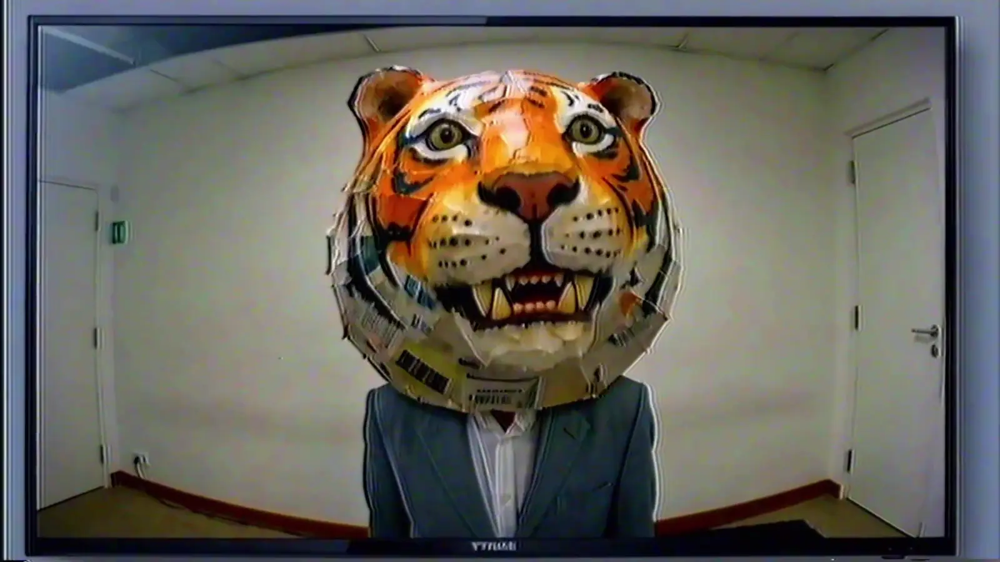
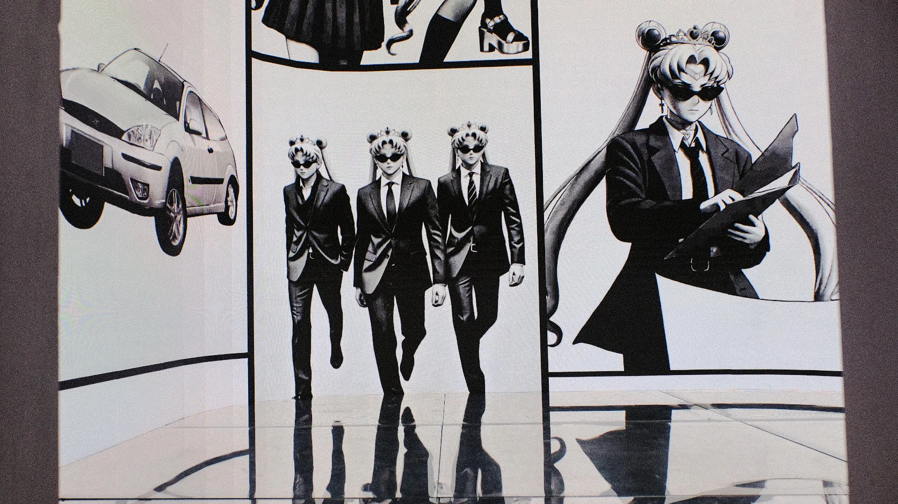

精选作品
视频、动画与装置领域的部分项目。

记忆之窗 · «Окно в память»
视频作品《在信息流中》，探讨信息过载与反复回归的信息消费习惯。
列昂·巴克斯特服装影像秀 · Дефиле в костюмах Льва Бакста
根据巴克斯特服装设计稿制作动画。

一河两岸 · «У реки два берега»
作品《显而易见／不易察觉》；与策展人紧密合作，负责所有参展作品的视频剪辑。
记忆的影像 · Образы памяти
为舞台项目创作视频艺术，探索身体、运动与记忆之间的关系。
净化 · Catharsis · «Избыточность» · «Катарсис»
视频作品《净化》，展览主题为《过量》。
Lenovo · It’s Gonna Be a Good Good Summer
为舞蹈影像制作生成式视觉效果。
一切都结束了 · «Это конец»
为Telegram创作的原创贴纸包。